WIR
Unsere Geschichte
1997
Wir fangen neu an:
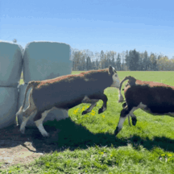
Mutterkuhhaltung statt Milchvieh
2001
Wir lassen die Sau raus:
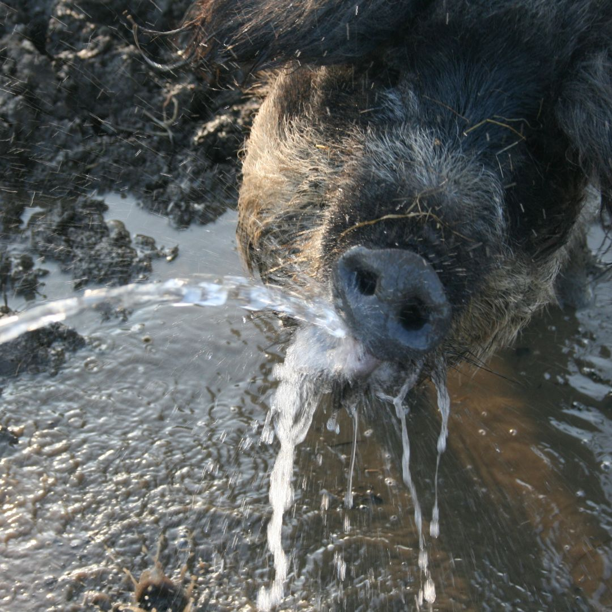
Wollschweine auf Gut Schalleck
2009
Wir erreichen ein Zuchtziel:
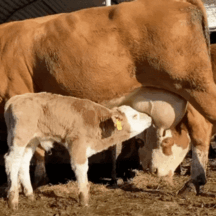
Genetisch Hornloses Fleckvieh
2015
Wir stellen um:
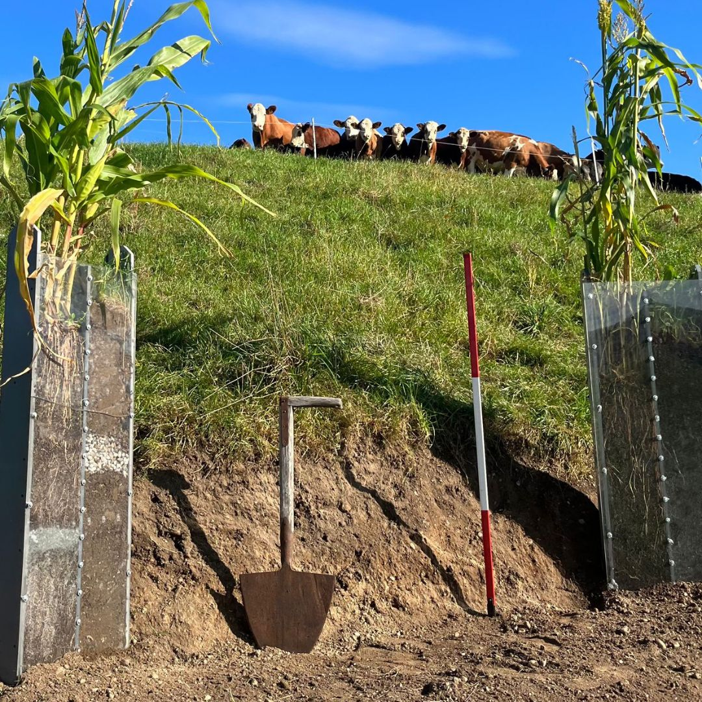
Regenerative Landwirtschaft
2020
Wir testen mal:

Kompostierung und Humusaubau
2025
Wir feiern erste Erfolge:
Bodenqualität verbessert sich nachhaltig
Unser Team
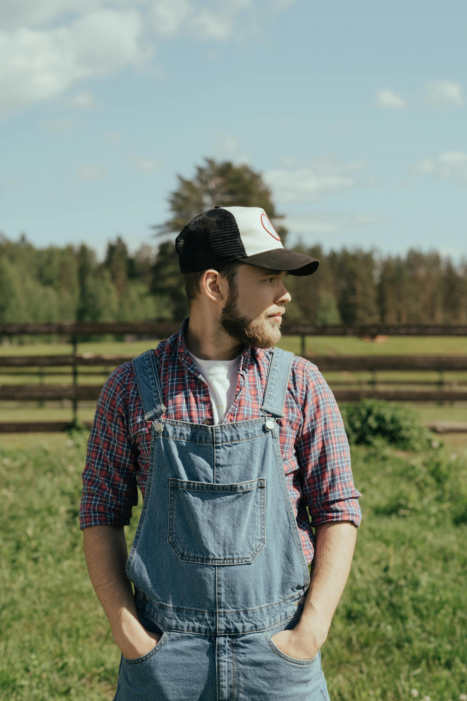
Johannes Meier
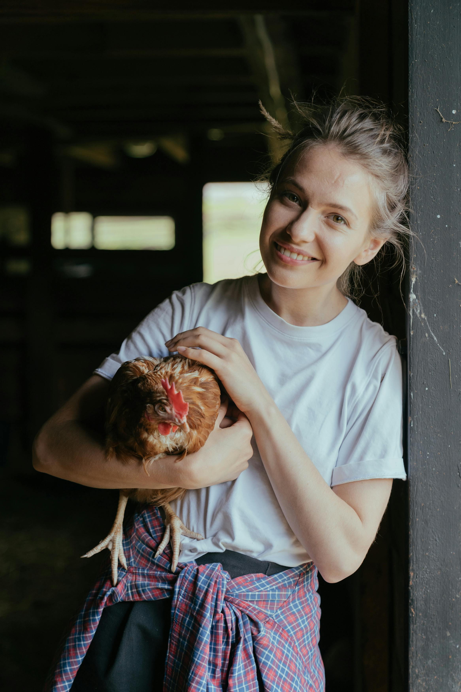
Katharina Meier
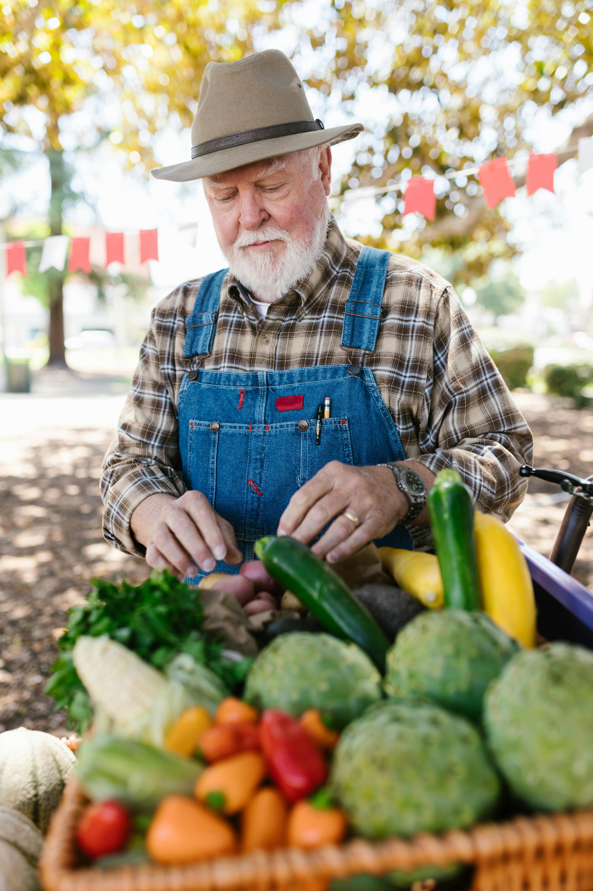
Wolfgang Schmidt
WAS
Unser Leitbild
Nachhaltigkeit
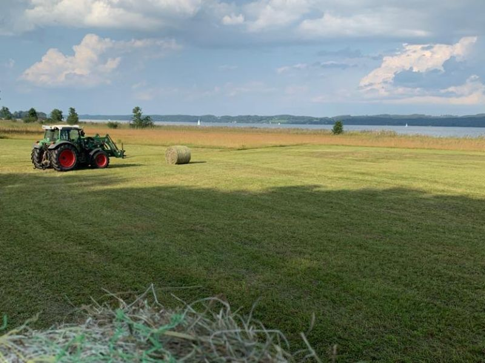
Wir verwenden natürliche Effektive Mikroorganismen - auf den Wiesen, im Stall & selbst zum Putzen.
Tierwohl
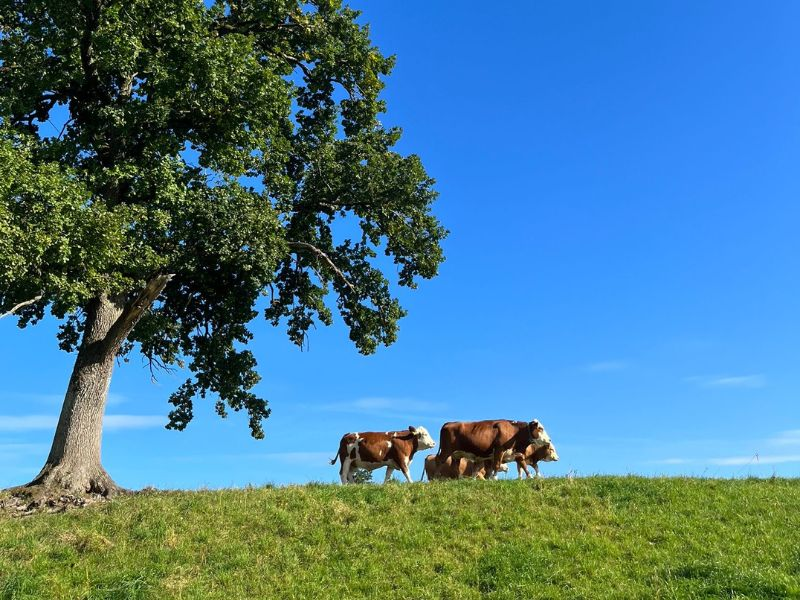
Unsere Kühe geniessen rund 200 Weidetage im Jahr, 50 davon auf einer Alm in Mittenwald.
Innovation
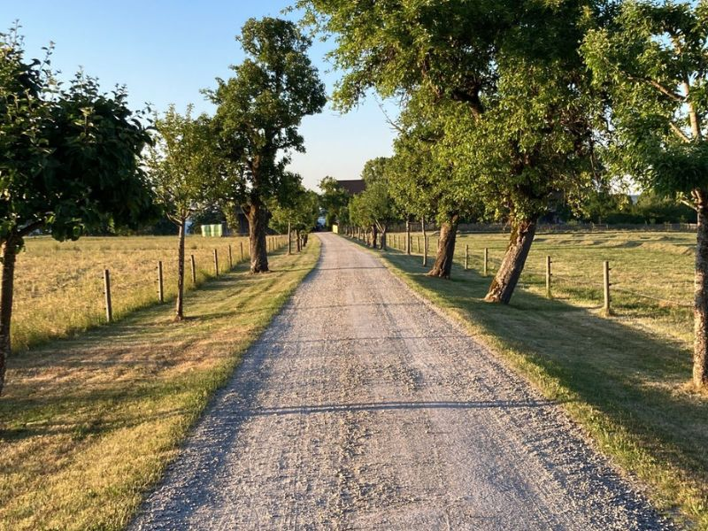
Mit Terra Preta-Gras-Bokashi und effektiven Mikroorganismen sorgen wir für nachhaltig gesunde Böden.
Was bedeutet regenerative Landwirtschaft?
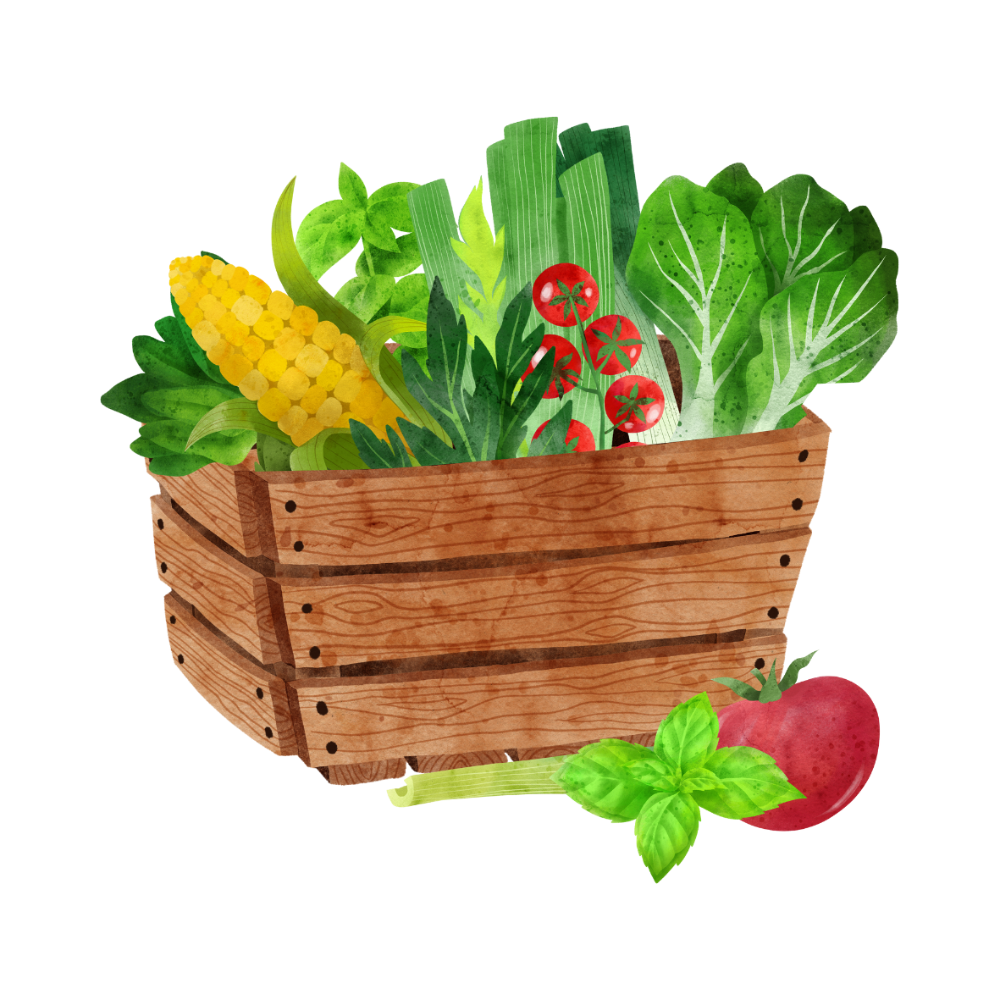
Biodiverstität
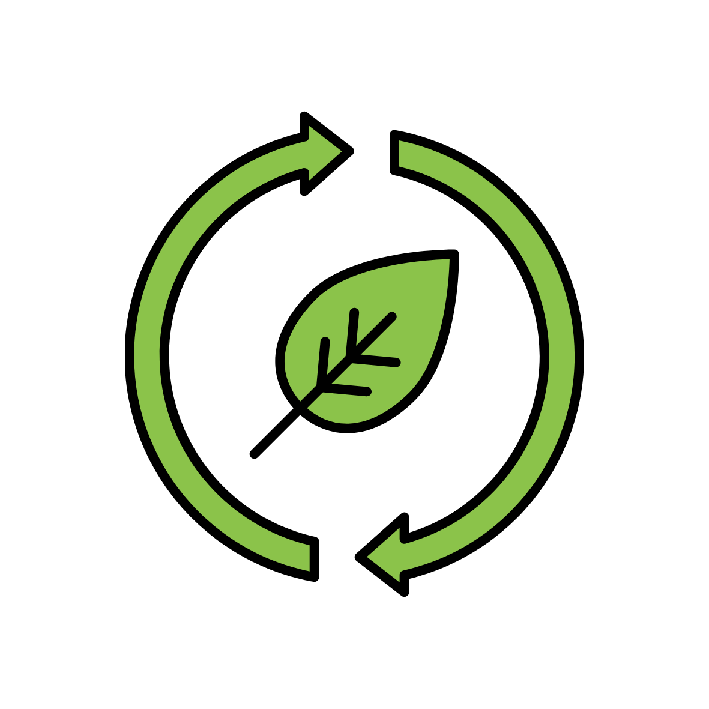
CO₂-Bindung
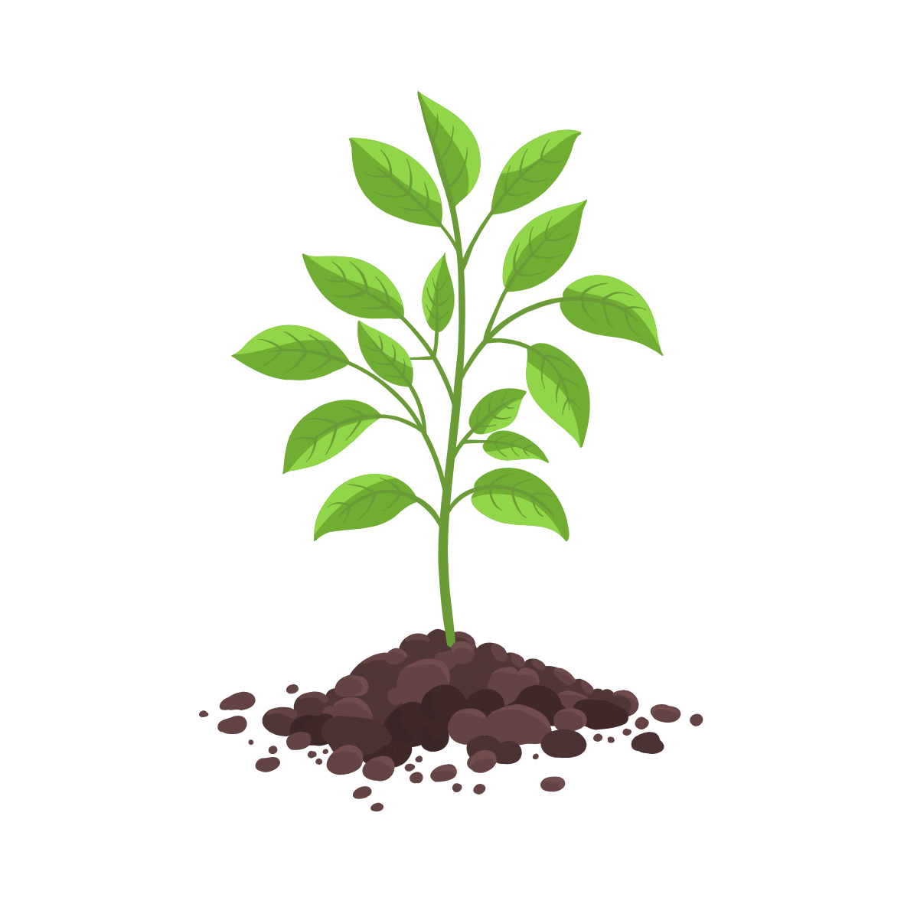
Bodenaufbau
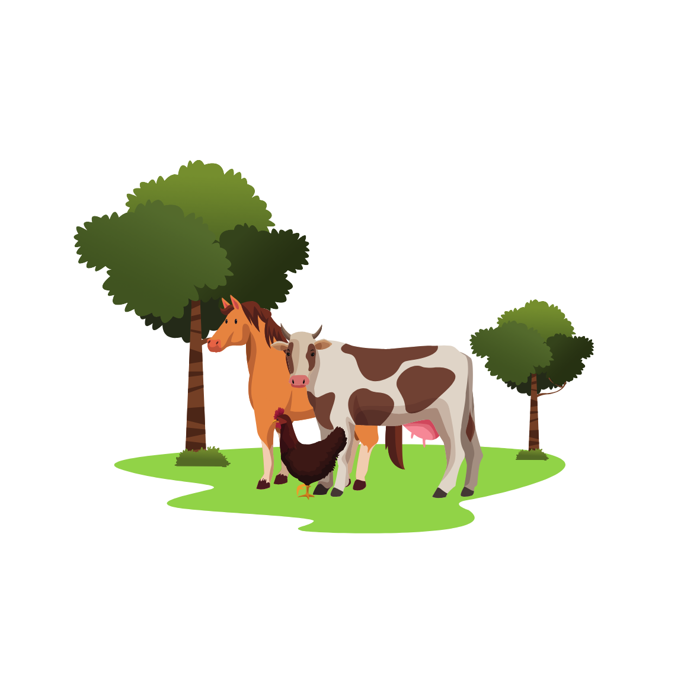
Integration der Tiere
WIE
Unsere Werte
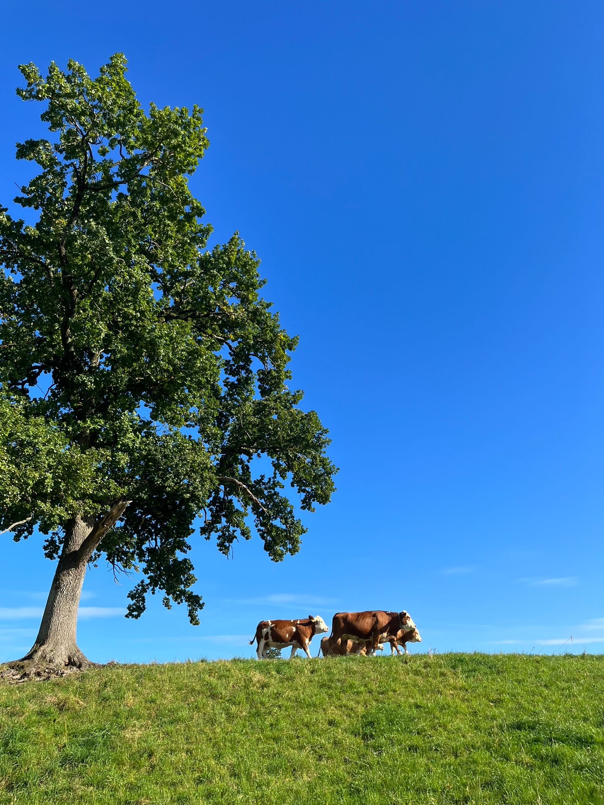
- Regenerative Landwirtschaft
- Tierwohl
- Innovation
- Respekt gegenüber Mensch, Tier und Natur
- Transparenz
- Regionalität
- Verantwortung
- Gemeinschaft
- Aufklärung
- Nachhaltigkeit
Du willst auch mitwirken? 🐮
Stimme ab, wie das nächste Kälbchen heissen soll.
WARUM
Unsere Vision
Tradition trifft Zukunft
Ganz nach diesem Motto möchten wir mit alten Traditionen und neuen Erkenntnissen eine zukunftsfährige und nachhaltige Landwirtschaft gestalten.
Durch eigene Versuche und Aufklärung innerhalb und ausserhalb von landwirtschaftlichen Kreisen wollen wir durch regenerative Landwirtschaft
auf eine nachhaltige Alternative für eine zukunftsfähige Landwirtschaft setzen.
WOFÜR
Unsere Philosophie
Bevor wir (Katharina und Johannes Meier) Gut Schalleck übernahmen, wurde der Betrieb mehrfach für extrem hohe Milchleistungstiere ausgezeichnet.
Als wir erkannt haben, dass dies zu Lasten des Tierwohls und auch der Umwelt ging, haben wir uns entschieden, die Landwirtschaft auf Gut Schalleck neu zu gestalten
Wir wollen mit unserem genetisch hornlosen Tieren und regenerativen Methoden eine zukunftsfähige Landwirtschaft gestalten, die auch noch für unsere Kinder, sowie als Inspiration für andere Betriebe eine Zukunft darstellen.
Dafür sind wir sehr dankbar.